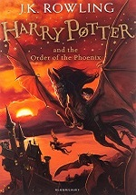

Avaliação Diagnóstica
Saga de livros: Harry Potter
Harry Potter e a Pedra Filosofal
Escrito por J. K. Rowling, contendo 264 páginas e editado pelo: Richard Francis-Bruce
Harry Potter e a Câmara Secreta
Escrito por J. K. Rowling, contendo 287 páginas e editado pelo: Richard Francis-Bruce
Harry Potter e o Prisioneiro de Azkaban
Escrito por J. K. Rowling, contendo 288 páginas e editado pelo: Richard Francis-Bruce
Harry Potter eo Cálice de Fogo
Escrito por J. K. Rowling, contendo 584 páginas e editado pelo: Richard Francis-Bruce

Harry Potter e a Ordem da Fênix
Escrito por J. K. Rowling, contendo 640 páginas e editado pelo: Richard Francis-Bruce
Harry Potter e o Enigma do Príncipe
Escrito por J. K. Rowling, contendo 471 páginas e editado pelo: Richard Francis-Bruce
Harry Potter e as Relíquias da Morte
Escrito por J. K. Rowling, contendo 551 páginas e editado pelo: Richard Francis-Bruce